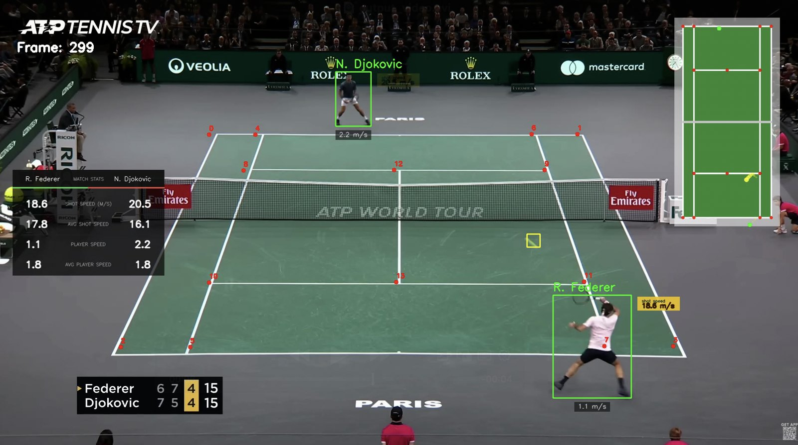
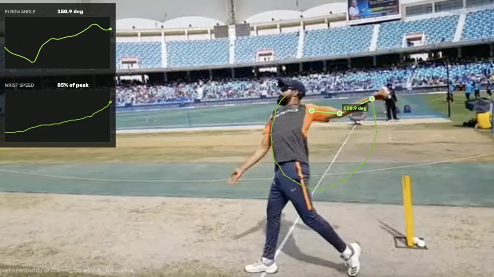
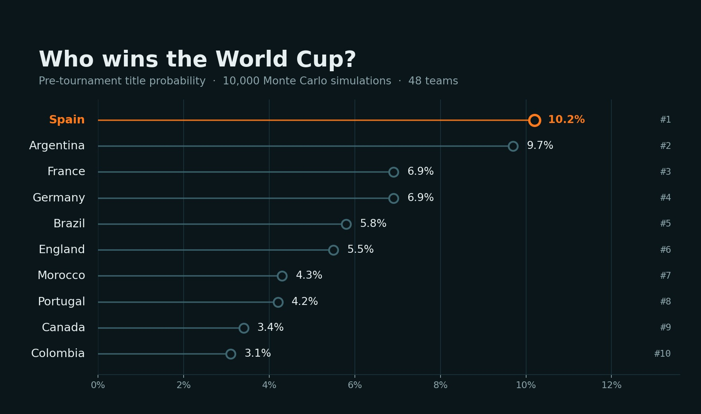

Selected work
Built, run, and checked against what actually happened.
Each of these is a working system rather than a notebook. Where a model made a prediction, I've published how it did — including where it was wrong.

tennis_vision
A full broadcast-analysis pipeline. YOLO11 tracks the ball and both players, a ResNet50 model regresses 14 court keypoints, and a homography turns pixel positions into real-world court coordinates — so shot speeds and player movement come out in metres per second rather than pixels.

Cricket Bowling Analysis
A pose-estimation pipeline for cricket bowling biomechanics. I hand-annotated 96 frames in CVAT to fine-tune a YOLO11-pose model on a custom shoulder-elbow-wrist skeleton, then built the analysis layer from scratch — elbow angle from joint-vector geometry, wrist speed normalised against the delivery's own peak (the source footage's true frame rate is unknown, so speed is reported relative rather than in m/s). Renders as an annotated video with live-updating angle and speed graphs.

Second-Tier Scouting Database
3,145 players across the Championship, 2. Bundesliga, Ligue 2, Serie B and Brasileirão Série B — collected, cleaned and normalised into per-90 and team-share metrics, then rated with TOPSIS inside nine position groups discovered by K-means clustering. Validated against an independent professional rating source.

World Cup 2026 Predictor
A Monte Carlo simulator that played all 48 teams through the tournament 10,000 times per run, re-forecasting after every matchday. Published before the group stage and updated in public through to the semi-finals — so every call it made is on the record, including the wrong ones.
Course projects
Built by working through published courses. They're here because the techniques carry over — YOLO detection and tracking, optical flow, k-means colour clustering — not because the design is mine.
Also building
Live chessboard to PGN
A 12-class YOLO11s detector reads piece and colour from a camera pointed at a real board, resolves the position to a FEN and evaluates it with Stockfish.
In progressChess blunder analyser
Parses a PGN, evaluates every move with Stockfish and flags where the game turned, with a pygame board for replaying the position.
Repo pendingSquawka data collection
Pulled passing and duel data for leagues that FBref does not cover, to fill the gaps in the scouting database.
Repo pending